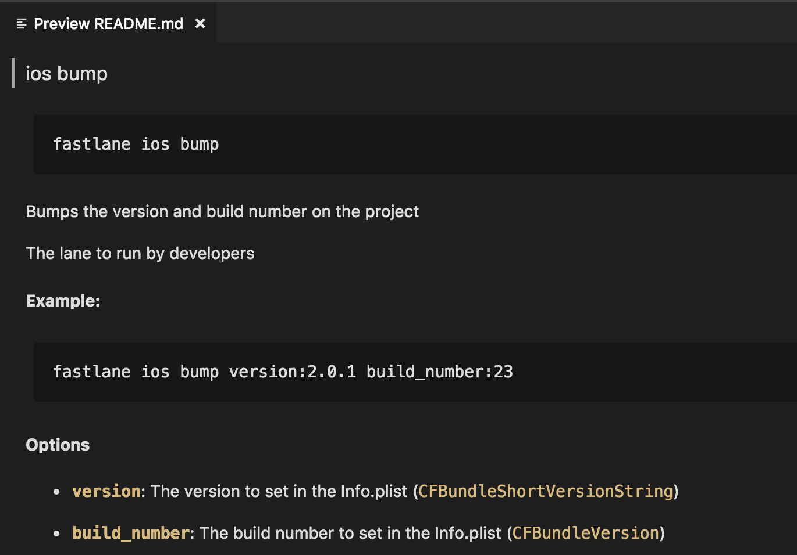

Best Practices and Tips
with Josh Holtz
Who is Josh Holtz?
-
Core contributor of fastlane since early 2015
-
Lead maintainer of fastlane since March 2018
-
Add features, manage issues, decide direction/focus
-
Currently spending to 20 to 30 hours a week maintaing fastlane
-
-
Owner of RokkinCat since 2011
-
Software consulting agency focused on new product development
-
Personally focused on mobile development and CI/CD
-
Return value of "Best Practices and Tips"?
-
Cleaner and more maintable code
-
Flexable and configurable
-
Easier to debug
-
Awareness of lesser known features
What will we cover?
-
1. Install with
Lock those gem versionsbundler -
2. Platforms
Namespace platform specific lanes -
3. Lane Options and
Open up user input for lanesUI -
4. Lane Description
Don't forget aboutdesc -
5. Environment Variables
Minimize harcoding -
6. fastlane Documentation
It's there 🙃 -
7. Separate Apple ID
Pretend fastlane is a person -
8. Use
This makes code signing withmatchorsighgymeasier -
9. Keep Lanes Simple
Use lane composition, actions, and plugins
1. Install with bundler
Create Gemfile
$ bundle initEdit Gemfile
source "https://rubygems.org"
gem "fastlane"Install gems
$ bundle install- Keep fastlane and its dependencies consistant
-
Good for when fastlane shells out commands
-
Ex: fastlane will execute
bundle exec pod installwhich will run the same CocoaPods gem version installed in theGemfile
-
Ex: fastlane will execute
-
Needed if third-party plugins are used
-
fastlane will load a
Pluginfilefrom theGemfilewhen installing plugins - This will be covered in a later slide
-
fastlane will load a
1. Install with bundler cont'd
Example Gemfile
source "https://rubygems.org"
gem "fastlane"
gem "cocoapods"
# Added by fastlane when installing plugins
plugins_path = File.join(File.dirname(__FILE__), 'fastlane', 'Pluginfile')
eval_gemfile(plugins_path) if File.exist?(plugins_path)2. Platforms
- Group/namespace lanes by platform
- Used by running
fastlane <platform> <lane>
lane :bump_version do
# This doesn't belong to a platform
end
platform :ios do
lane :build do
# Do ios build stuff
end
end
platform :mac do
lane :build do
# Do mac build stuff
end
end
platform :android do
lane :build do
# Do android build stuff
end
end3. Lane Options and UI
- Pass options to a lane:
fastlane <lane> opt1:val1 opt2:val2 -
Get user input with
UIclass
lane :bump do |options|
# Prompt version number
version = nil
loop do
version = options[:version] || UI.input("Version?")
break if version && !version.empty?
end
# Prompt build number
build_number = options[:build_number] || UI.input("Build number (defaults to current timestamp)?")
build_number = Time.now.to_i if build_number.nil? || build_number.empty?
# Update plist with new version and build number
update_info_plist(
xcodeproj: 'Test.xcodeproj',
plist_path: 'Test/Info.plist',
block: proc do |plist|
plist["CFBundleShortVersionString"] = version
plist["CFBundleVersion"] = build_number
end
)
end4. Lane Description
desc "Bumps the version and build number on the project"
desc "The lane to run by developers"
desc "#### Example:"
desc "```\nfastlane ios bump version:2.0.1 build_number:23\n```"
desc "#### Options"
desc " * **`version`**: The version to set in the Info.plist (`CFBundleShortVersionString`)"
desc " * **`build_number`**: The build number to set in the Info.plist (`CFBundleVersion`)"
desc ""
lane :bump do
# See previous slide for logic
end4. Lane Description cont'd
5. Environment Variables
Put non-secret values in .env
# fastlane/.env
GYM_PROJECT=Example.xcodeproj
GYM_SCHEME=developmentPut --env specific values in .env.<environment>
-
These get loaded when
fastlane <lane> --env <environment> gets run
# fastlane/.env.staging
GYM_SCHEME=staging# fastlane/.env.production
GYM_SCHEME=productionLoad secret values from .env.secret
- Add
.env.secretto.gitignoreso not to commit secret values - Call
Dotenv.load ".env.secret"at top ofFastfile
# fastlane/.env.secret
FASTLANE_PASSWORD=shhhhhhfastlane_require "dotenv"
Dotenv.load ".env.secret"5. Environment Variables cont'd
fastlane_require "dotenv"
Dotenv.load(".env.secret")
lane :test do
UI.message("GYM_PROJECT: #{ENV['GYM_PROJECT']}") # Prints "Example.xcodeproj"
UI.message("GYM_SCHEME: #{ENV['GYM_SCHEME']}") # Prints "development", "staging", or "production"
UI.message("FASTLANE_PASSWORD: #{ENV['FASTLANE_PASSWORD']}") # Prints "shhhhhh"
end
6. fastlane Documentation
7. Separate Apple ID
Instead of your.name@example.com... Use fastlane@example.com
- Prevents from having to use a personal email/password
- Especially if two-step or two-factor auth is enabled
- Can revoke access at anytime (great for CI)
8. Use match or sigh before gym
- Xcode 9 requires that an
-exportOptionsPlistbe passed to thexcodebuildcommand that gym generates - This
exportOptionsPlistis required to have a key forprovisioningProfiles - This can be manually passed into gym through
export_optionslike the following:
lane :build do
gym(
export_options: {
"provisioningProfiles": {
"com.joshholtz.FastlaneDemo": "match AppStore com.joshholtz.FastlaneDemo",
},
"method": "app-store",
"signingStyle": "manual"
}
)
endBut this can be easier with by calling match or sigh 🚀
8. Use match or sigh before gym cont'd
lane :build do
sigh(
app_identifier: "com.joshholtz.FastlaneDemo"
)
gym()
endBy calling sigh (or match), fastlane will...
- Automatically create
exportOptionsPlist - Automatically set
provisioningProfileskey with profiles that were created or downloaded - Automatically set
methoddepending on what was passed into sigh or match
9. Keep Lanes Simple - Lane Composition
Call another lane or private_lane from a lane
Our previous :bump lane can be cleaned up like:
lane :bump do |options|
# Update plist with new version and build number
update_info_plist(
xcodeproj: 'Test.xcodeproj',
plist_path: 'Test/Info.plist',
block: proc do |plist|
plist["CFBundleShortVersionString"] = get_version(options)
plist["CFBundleVersion"] = get_build_number(options)
end
)
end
private_lane :get_version do |options|
version = nil
loop do
version = options[:version] || UI.input("Version?")
break if version && !version.empty?
end
version
end
private_lane :get_build_number do |options|
build_number = options[:build_number] || UI.input("Build number (defaults to current timestamp)?")
build_number = Time.now.to_i if build_number.nil? || build_number.empty?
build_number
end9. Keep Lanes Simple - Custom Action
Sometimes lanes need to have some custom Ruby implementation
In this contrived example, we are going to set our app name to a randomly selected Star Wars character
lane :star_wars do
fastlane_require "rest-client"
resp = RestClient.get "https://swapi.co/api/people/"
json = JSON.parse(resp.body)
people = json["results"]
random_person = people.sample
update_info_plist(
xcodeproj: 'Test.xcodeproj',
plist_path: 'Test/Info.plist',
block: proc do |plist|
plist["CFBundleDisplayName"] = random_person['name']
end
)
sigh()
gym()
end9. Keep Lanes Simple - Custom Action cont'd
-
Create new action with
fastlane new_action - Give your action a name
-
Open up your newly created action in
./fastlane/actionsdirectory -
Fill out the templated methods and put your logic in the
runmethod
module Fastlane
module Actions
module SharedValues
STAR_WARS_API_LAST_RESPONSE = :STAR_WARS_API_LAST_RESPONSE
STAR_WARS_API_COUNT = :STAR_WARS_API_COUNT
STAR_WARS_API_NEXT = :STAR_WARS_API_NEXT
STAR_WARS_API_PREVIOUS = :STAR_WARS_API_PREVIOUS
end
class StarWarsApiAction < Action
def self.run(params)
fastlane_require "rest-client"
resp = RestClient.get "https://swapi.co/api#{params[:route]}"
json = JSON.parse(resp.body)
Actions.lane_context[SharedValues::STAR_WARS_API_LAST_RESPONSE] = json
Actions.lane_context[SharedValues::STAR_WARS_API_COUNT] = json["count"]
Actions.lane_context[SharedValues::STAR_WARS_API_NEXT] = json["next"]
Actions.lane_context[SharedValues::STAR_WARS_API_PREVIOUS] = json["previous"]
json["results"]
end
#####################################################
# @!group Documentation
#####################################################
def self.description
"Call Star Wars API"
end
def self.details
"Call Star Wars API because Star Wars is awesome"
end
def self.available_options
[
FastlaneCore::ConfigItem.new(key: :route,
env_name: "FL_STAR_WARS_API_ROUTE",
description: "The route to call on Star Wars API",
required: true
end)
]
end
def self.output
[
['STAR_WARS_API_LAST_RESPONSE', 'Last resopnse because why not']
]
end
def self.return_value
"Hash with person info"
end
def self.authors
["joshdholtz"]
end
def self.is_supported?(platform)
[:ios, :android, :mac].include?(platform)
end
end
end
end9. Keep Lanes Simple - Custom Action cont'd
- Now replace custom logic in the lane with new action name
- The new action code is easier to maintain and Test
- The new acttion has documentation that other developers can reference
- The action can easily be reused
- The faslane output now shows when new action is being called
lane :star_wars do
random_person = star_wars_api(route: "/people/").sample
update_info_plist(
xcodeproj: 'Test.xcodeproj',
plist_path: 'Test/Info.plist',
block: proc do |plist|
plist["CFBundleDisplayName"] = random_person['name']
end
)
sigh()
gym()
end9. Keep Lanes Simple - Custom Plugin cont'd
- A plugin is 100% the same thing as an action but contained in its own repository
- It is created outside of a fastlane project with templated tests and a README
- More information can be found on the docs page on how to create - https://docs.fastlane.tools/plugins/create-plugin/